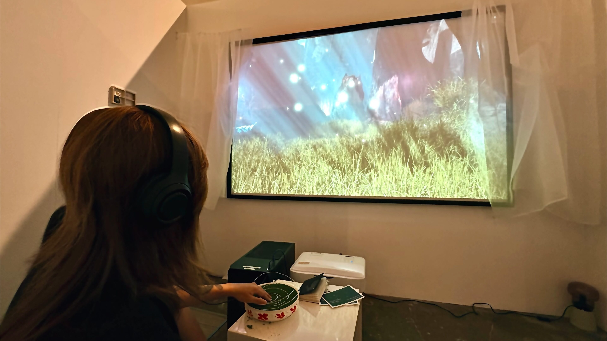
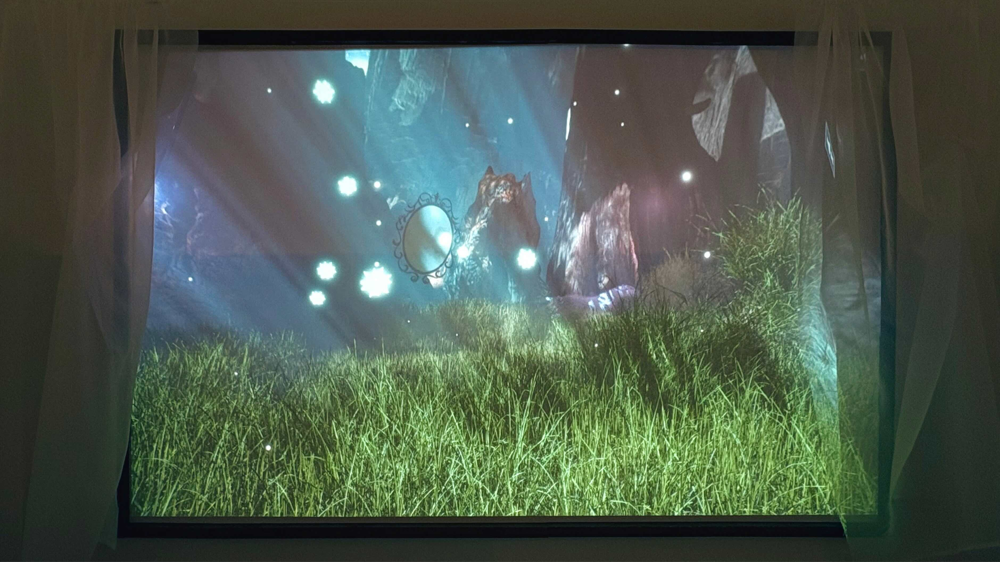
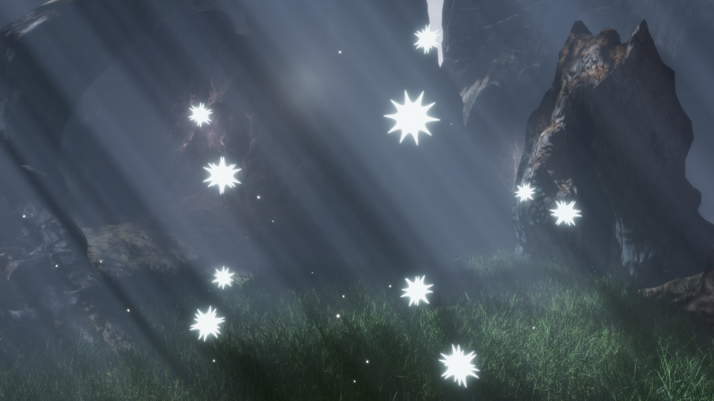

Far Far Away is an interactive installation that examines Alienation, Memory, and the Search for identity through the lens of parallel worlds, imagining a space where fragments of the self-retreat beyond the boundaries of perception.
Primarily, this project is a technical exploration that interrogates the conventions of the “immersive” environment. Through the dialogue of physical interactions with analogous inputs onto digital spaces, it collapses the boundary between tactile and virtual interaction. Developed using Unreal Engine and an Arduino-enhanced object, the installation materialises the tension between the public-facing self and the inward-turning psyche.
Conceptually, a narrative framework anchors the piece, tracing a protagonist who , fractured by isolation, retreats into a memory-saturated parallel realm. This arc mirrors broader societal disconnection, questioning belonging within a landscape defined by digital escapism. Tangible elements function as psychological proxies; audience interaction progressively alters the spatial and digital architecture, externalizing the protagonist’s internal state.
Through this encounter, the work positions the viewer not as a passive observer but as a co-navigator of alienation, prompting reflection on the psychological toll of contemporary hyper-disconnection.


